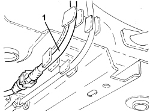
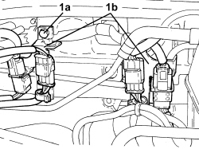
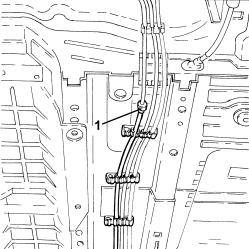
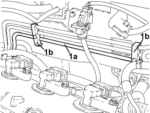

1080E50 INTERMEDIATE FUEL VAPOUR PIPE R R
- Path
- Procedures > 10 ENGINE > 1080 EMISSION CONTROL SYSTEM > 1080E EVAPORATION CONTROL SYSTEM > 1080E50 INTERMEDIATE FUEL VAPOUR PIPE R R
- Kind
- repair procedure (removal / refitting; the operation number is the code)
- Applies to
- engines: 1.9 JTS, 2.2 JTS, 3.2 JTS; all production periods
- Interactive page
- https://sloeber94.github.io/elrnDB/#/939010631
Applies to: engines: 1.9 JTS, 2.2 JTS; all production periods
 Removing
Removing
 Refitting
Refitting
Applies to: engines: 1.9 JTS, 2.2 JTS; all production periods

Applies to: engines: 1.9 JTS, 2.2 JTS; all production periods

Applies to: engines: 3.2 JTS; all production periods
Removing
RefittingOp. 1040E22 FUEL PIPE PROTECTION - R.R
Op. 1072B50 AIR CHAMBER - R.R.
1. Disconnect the rear rapid connector for the intermediate fuel vapour pipe.

Applies to: engines: 3.2 JTS; all production periods
- Release the intermediate fuel supply pipe from the underbody fastenings.
1. Undo the fixing nuts and move the engine coolant reservoir to one side.

Applies to: engines: 3.2 JTS; all production periods
1. Release the rigid section of the intermediate fuel vapour pipe (1a) from the fastening clips (1b) and remove it.

Applies to: engines: 3.2 JTS; all production periods
Refitting
Removing- Place the intermediate fuel vapour pipe in position, secure it to the bodyshell using the clips and connect it to the rear vapour pipe.
- Place the engine coolant reservoir on its bracket and secure it using the nuts.